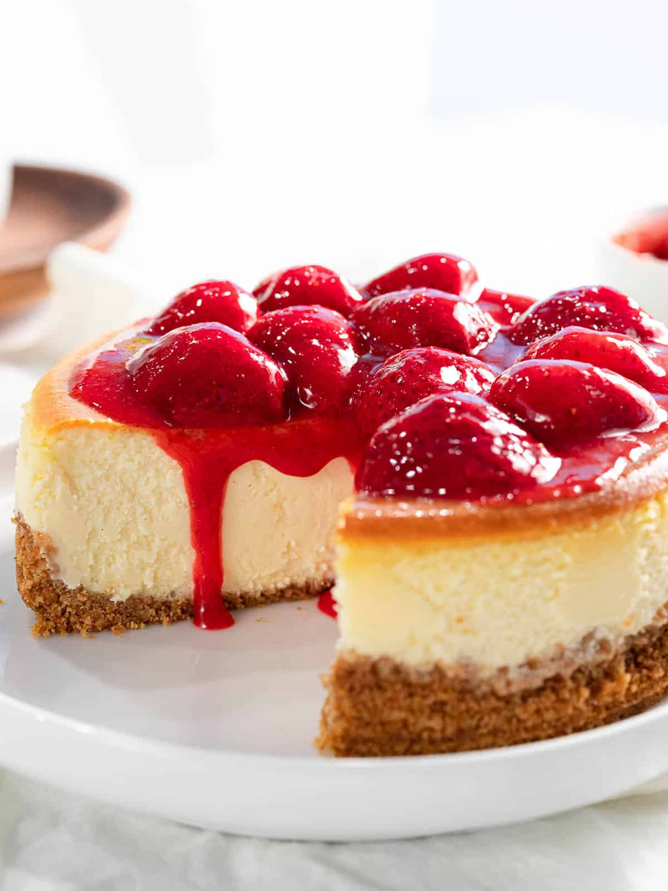

Strawberry Philadelphia Classic Cheesecake

Ingredients
- 1 cup Honey Maid Graham Cracker Crumbs
- 3 tablespoons sugar
- 3 tablespoons melted butter
- 5 (8 ounce) packages Philadelphia Cream Cheese, softened
- 1 cup sugar
- 3 tablespoons flour
- 1 tablespoon vanilla
- 1 cup sour cream
- 4 eggs
- 1/3 strawberry jam
Directions
- Preheat oven to 325 degrees F. Line 13x9-inch baking pan with foil, with ends of foil extending over sides of pan. Mix cracker crumbs, 3 Tbsp. sugar and the butter; press firmly onto bottom of prepared pan. Bake 10 min.
- Beat cream cheese, 1 cup sugar, the flour and vanilla in large bowl with electric mixer on medium speed until well blended. Add sour cream; mix well. Add eggs, one at a time, mixing on low speed after each addition just until blended. Pour over crust. Gently drop small spoonfuls of jam over batter; cut through batter several times with knife for marble effect.
- Bake 40 min. or until center is almost set. Cool completely. Refrigerate at least 4 hours or overnight. Lift cheesecake from pan using foil handles. Cut into 16 pieces to serve. Store leftover cheesecake in refrigerator.